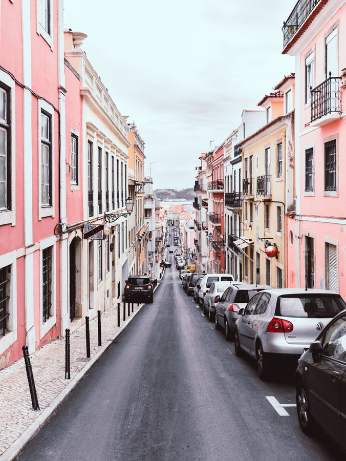

Billy James grew up in Los Angeles and has been traveling far from home and taking pictures ever since childhood. Her parents owned a stock footage company and she accompanied them across the world with her camera to places as far flung as Bhutan, Tibet, Africa, Europe, and Indonesia. She was previously the Deputy Photo Editor at Travel + Leisure Magazine in New York and a frequent contributor to the magazine. She has a Bachelor’s degree from Brown University and has studied at the International Center of Photography. Jessica is currently based in Los Angeles. She is also available for travel assignments departing New York City. She is the curator of Wanderlust: A Silent Auction Benefit that auctions travel photography prints to raise money for environmental charities.
Her favorite thing to photograph are repurposed cars all around the world that house the artistry the country is known for.
Her motto in life is to always work harder. Billy James believe that her work is her best form of identification and because of this she maintains a focus on her work ethic and gives all her projects 100%.
As to her favorite sneaker, she credits the Nike's Air Max as it keeps her light on her feet and provides the comfort that she needs to chase the perfect picture.
Rosa’s fascination for making still pictures come alive started during her childhood, when she was given a gift in the form of a camera. She did her very first photo exhibit during grade school and the rest as they say is history. Rosa Esperanza graduated from the California College of Arts as a cum laude, where she was able to hone and develop her photography skills by exploring abstract ideas and minute life details in particular with modern analogy and digital equipment. The images projected by Rosa are very inspiring those who view them with a very personal touch. Her pictures demonstrate normal everyday life activities that people can connect to, thus making her one of the most sought after photographer in town. Her favorite thing to photograph abstract images of every day life activity.

She believes in going with the current and allowing room for change. Her work highlights the changes of every day life and how one must grow with it.
Her favorite sneakers is a running style with a foam sole that helps her feet breathe and face any weather.
Jamella James is known for her on the scene phoography. She captures your favorite footwear on the court and ties it all with coloration.
She believes all it takes to make it is to stand up and take a stance in what you believe."For me, the question is, “Is this something worth fighting for?” And my “worth it” equation includes how much it means to me, how much of a difference I can make, what the range of consequences might be, and whether I will experience regret later on.In fact, I think that standing for something is really the only way to be truly effective in the long run. Standing against means working to destroy, while standing for means working to create."
Also known for her amazing skin. We asked her to share her skin routine with us. "A great complexion starts with the right basics – cleansing, repairing, protecting – as getting these right, and knowing what to use and when, will make all the difference."
Veronica caputures the beauty in the streets we all fail to see. Street photography is one of the most challenging, but at the same time one of the most rewarding genres of photography. Documenting people in their everyday environment is not easy – it requires patience, hard work and sometimes even some bravery to be able to approach and photograph complete strangers.
Her go to kicks are the Nike Airmax beacuase they keep her light on her feet in these concrete streets. The shoe was originally designed by Tinker Hatfield, who started out working for Nike as an architect designing shops, and is also one of her favorite creative success stories.
She credits self love to her amazing journey. "Self-love is a popular term today that gets tossed around in normal conversation. You have to love yourself more. Why don't you love yourself? If you only loved yourself, this wouldn't have happened to you. You can't love another person until you love yourself first." These are just a few of the self-love directives that we give or get to suggest a way to more living fulfillment. Self-love is important to living well. It influences who you pick for a mate, the image you project at work, and how you cope with the problems in your life. It is so important to your welfare that I want you to know how to bring more of it into your life."